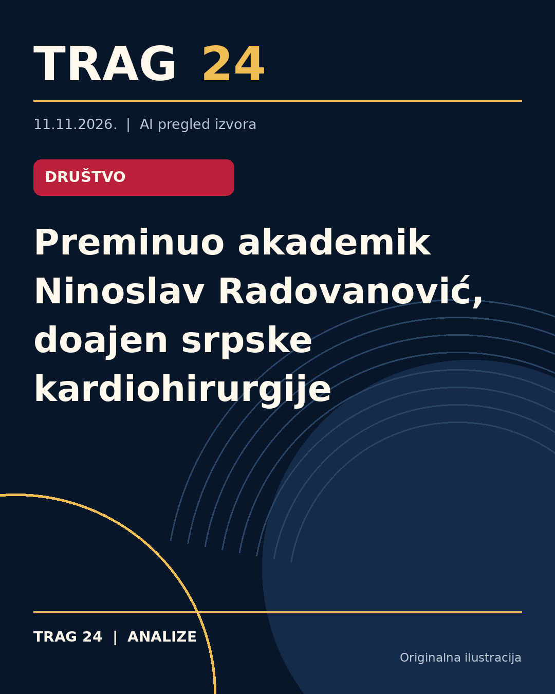

Preminuo akademik Ninoslav Radovanović, doajen srpske kardiohirurgije

ŠTA SE DOGODILO
Akademik Ninoslav Radovanović, istaknuti stručnjak u oblasti kardiovaskularne hirurgije, preminuo je 10. novembra u Ženevi u 87. godini. Bio je jedan od vodećih kardiohirurga, poznat po velikom doprinosu razvoju moderne kardiohirurgije u Srbiji i šire.
HRONOLOGIJA
Radovanović je diplomirao na Medicinskom fakultetu Univerziteta u Beogradu 1965. godine, a lekarski staž je obavio na klinikama istog fakulteta. Usavršavao se u Švajcarskoj, Francuskoj i SAD tokom 1970-ih godina u renomiranim centrima, između ostalog i na Harvard Medical School. Od 1980. do 1999. i ponovo od 2001. do 2006. godine bio je direktor Instituta za kardiovaskularne bolesti u Sremskoj Kamenici, gde je u okviru Instituta osnovana Univerzitetska klinika za kardiovaskularnu hirurgiju 1984. godine. Prvu transplantaciju srca u Srbiji izveo je 1989. godine. Bio je i profesor Medicinskog fakulteta u Novom Sadu, a u kasnijim godinama radio je i u Sloveniji.
ŠTA NAVODE IZVORI
Prema saopštenjima Srpske akademije nauka i umetnosti, Radovanović je učestvovao u više od 30.000 operacija na otvorenom srcu, a samostalno je izveo više od 15.000 takvih operacija. Bio je član brojnih domaćih i međunarodnih medicinskih udruženja i autor preko hiljadu naučnih radova, kao i pet međunarodno priznate monografije. Izvori ističu njegov značajan doprinos uvođenju inovativnih hirurških tehnika i razvoj naučnoistraživačkog rada u kardiohirurgiji.
ŠTA JE POTVRĐENO
Potvrđeno je da je Ninoslav Radovanović preminuo 10. novembra u Ženevi u 87. godini, da je bio član SANU od 2003. godine kao dopisni, a od 2009. kao redovni član, i da je dugogodišnji direktor Instituta u Sremskoj Kamenici. Takođe, potvrđeno je da je izveo prvu transplantaciju srca u Srbiji 1989. godine, kao i da je imao značajan broj operacija na otvorenom srcu. Njegov profesionalni status i doprinosi su prepoznati i nagrađeni nizom domaćih i međunarodnih priznanja.
ŠTA NIJE POTVRĐENO
Informacije o ličnim detaljima života akademika Radovanovića, kao ni detalji uzroka smrti nisu izneseni u dostupnim izvorima. Nemaju se podaci o njegovim aktivnostima u poslednjim godinama života izvan profesionalnog angažmana u oblasti kardiohirurgije.
ŠTA OSTАJE OTVORENO: Ostaje nepoznato kakve su bile detaljne okolnosti njegove smrti, kao i da li su postojale planirane dalje aktivnosti ili istraživački projekti na kojima je radio u poslednjem periodu života. Takođe, ostaje otvoreno pitanje uticaja njegovog rada na buduće generacije kardiohirurga u Srbiji i regionu.
Izvori
- https://www.blic.rs/vesti/drustvo/umro-dr-ninoslav-radovanovic-doajen-kardiohirurgije/pqwj42m
- https://nova.rs/vesti/drustvo/sanu-preminuo-akademik-ninoslav-radovanovic/
- https://www.danas.rs/vesti/drustvo/preminuo-ninoslav-radovanovic/
Ova analiza je pripremljena uz pomoć veštačke inteligencije na osnovu javno dostupnih izvora. Navodi izvora nisu nužno nezavisno potvrđeni.